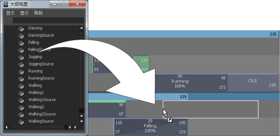
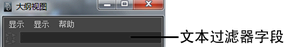
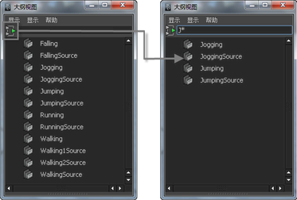

在“大纲视图”(Outliner)中查看片段
- 打开大纲视图。
- 在大纲视图中，关闭。
- 打开。
此时“大纲视图”(Outliner)中列出了场景中的所有动画片段（源片段和常规片段）。
复制“大纲视图”(Outliner)中的片段并将其粘贴到“Trax 编辑器”(Trax Editor)中的角色上
- 打开大纲视图。
- 在“大纲视图”(Outliner)中显示场景的源片段和常规片段。请参见上述步骤。
此时“大纲视图”(Outliner)中列出了场景中的所有动画片段（源片段和常规片段）。
- 在要复制的片段上单击鼠标中键，并将其从大纲视图拖到所需的角色、轨迹和位置上。
轨迹视图区域内的鼠标指针下方将出现一个白色方框，该方框表示要插入的片段实例。该白色方框的长度与要复制的片段长度相同。
此外，如果鼠标指针放在轨迹之间，将出现一条黑线，表示将在轨迹之间创建一条新的轨迹，以容纳要复制的片段。有关将轨迹添加到角色、组或子角色的详细信息，请参见选择、添加和移除轨迹。
松开鼠标按钮时，在白色方框处（Trax 时间轴中的轨迹和点）将出现一个片段实例。
如果将片段粘贴到相同角色集中的某一个角色上，Maya 将创建该片段的实例。请参见复制片段。
如果将片段粘贴到另一个角色集中且该片段的角色集和该片段要拖放到的角色集之间存在角色映射，Maya 将使用此角色映射来粘贴片段。请参见手册的“角色设置”部分的在角色之间映射动画。
否则，Maya 将用“按节点名称”(By Node Name)粘贴方法来粘贴角色中的片段。如果要使用一种不同的方法（如“按属性名称”(By Attribute Name)）粘贴，请在“粘贴片段选项”(Paste Clip Options)窗口（“Edit > Paste”(Edit > Paste) >  ）中选择所需的方法。
）中选择所需的方法。
在“大纲视图”(Outliner)中按名称过滤片段
- 在“大纲视图”(Outliner)的“文本过滤器”(Text Filter)字段中，输入片段的完整名称或部分名称，以便让“大纲视图”(Outliner)中的片段列表仅显示指定名称的片段。

例如，如果只想在大纲视图中显示名称以字母 D 开头的片段，请在大纲视图的文本过滤器字段中输入 D*，然后按 Enter 键。
注：“大纲视图”(Outliner)的文本过滤器字段区分大小写。